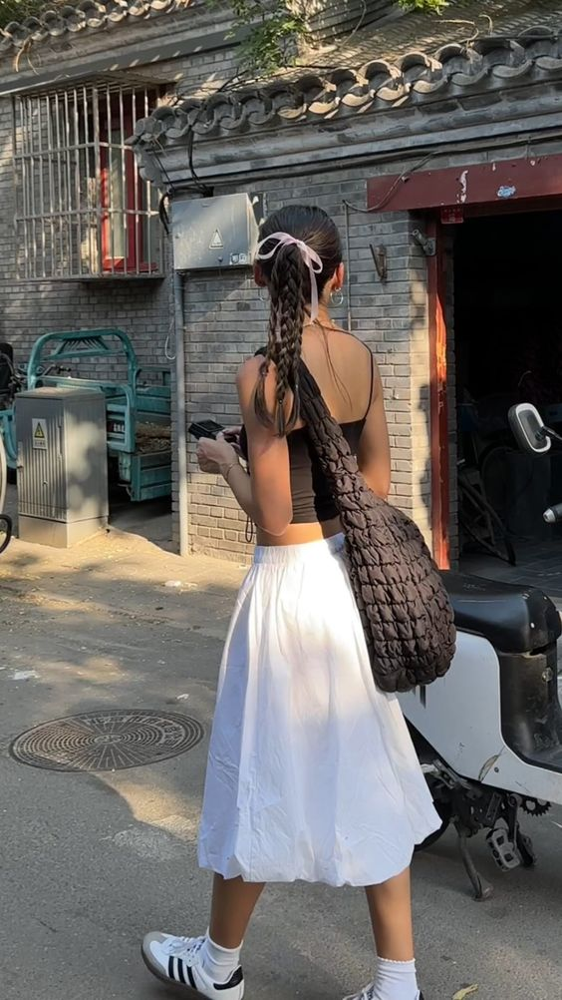

Pinterest, like other social medias which allow for collecting and bookmarking, has turned the average girl into an expert in semiotics through the process of cataloguing images into a digital moodboard. The platform’s personalized algorithm presents its user with an endlessly scrollable feed of images and the habitual exercise of recognizing the hidden signs and signified messages which construct the consumer image.
On a recent Instagram challenge trend, users are asked to create a 4 image collage of the first result Pinterest provides when prompted with “quote”, “celebrity”, “outfit” and “aesthetic”. This ensemble of images denotes the aesthetic uniqueness which lies behind each and every girl.
A quote on Pinterest can range from a poem to a screen grab from a 00s rom-com to a Getty image of Jane Birkin. They’re bible verses on metal dog chains, graffiti on white brick walls, fictional self-help book covers. A hand-drawn heart with the words “I am young and learning how to live” is a great quote about growing up.
These text elements come inseparable from the image or medium in which they are designed. A setting, story, or mood is associated with the quote, training the brain to link image with text in a way that creates deeper feeling. On their own, text or image become devalued (in many cases, the content of the text serves little purpose besides its existence as text); however, this results in a greater symbolism in the combined image. This signified meaning is what allows the aesthetic universe of Pinterest to continue to develop and exist. It relies on the imagination of the user to abstract a singular “Pin” into an idea, which transforms other abstracted “Pins” into a system of aesthetics.
The abstracted Pin is a model or ideal which is, luckily, often seemingly attainable through replication. Outfit inspiration is one of Pinterest’s main attraction and follows similar patterns of abstraction as a quote. However instead of just text and image, the outfit, subject, and image interact at varying degrees to determine aesthetic value.
The image above represents the attainable goal of the Pinterest user, which is not to admire the pictured girl but to become her, in her surroundings, in a tank top shaded by the canopy, in her stride, posed facing away, caught off guard, tan, busy…
Her outfit is replicable and Pinterest will even link her purchasable shoes or bag or ribbon using its image search. If it misses it, a question in the comments section asking “Where is ____ from?” will solve the mystery. What question lingers is “Who is she?”. Sometimes, this is already answered in the comments just like the Sambas. Whether or not the identity of this girl is revealed, the image of her will begin to appear in one’s conscious. This is especially common while walking fast with ribboned braids and a large black crossbody in a foreign town. Perhaps one rides a white motorbike or uses a digital camera or learns how to knit sweaters or lights long candles at dinner time because it makes one feel like her.
Jean Baudrillard describes advertising as a medium to imagine an alternative universe for every object that “do not constitute a real language, but merely a range of distinguishing marks more or less arbitrarily keyed to a range of stereotyped personalities”. An essential aspect of these objects are their ability to be readable enough to formulate a clear image of the signified ideal girl, or at least the psychological essences of her. In the example, the items of clothing and the background objects are read to signify this second universe centered around the Girl. The image reveals this Girl to you and says “come follow me”. In blind faith, you trust the image and its promise to guide you into becoming the type of girl who has a clear identity.
An important aspect of this identity is the combination of clothing and accessories which adorn the girl and which will eventually adorn you! The easiest step into becoming her is to own the same things as her or as she would own. Bringing it back to the quote mentioned above, consumable objects tend to have a certain readability that allows them to signify a personality when placed together as a collection or as a system (outfit). Reducing the example image of the girl above into a collection of purchasable items illuminates the power of capital-centered Pinterest to transform the image into an advertisement. This extends to tags, such as coquettish or ____ girl or ____core, which are integrated into the search function, telling us: Use these key terms or buy these objects to become her. Magazines have already relied on slogans and photoshoots to convince the consumer of a desirable persona for decades; however, Pinterest and social media have accelerated this consumerism into transforming an everyday image into something curated, something with specified aesthetic value.
The rampant cycling of trends has revealed the fallibility of one’s own identity, especially in its need to ground itself on materialism. If a simple alteration in one’s makeup or fashion can greatly alter how one is perceived, then modern girlhood is an unsettling performance of the illusory state of identity. A never-ending grasp onto the next it girl to believe in and become. Pinterest, in a way, is a religion of sorts. A trust in the image and a devotion to the personalities which its mystery algorithm alludes to. A mission to transcend one’s own body and redemption in becoming the mirrored image of the girl despite lack of ever knowing her. A transubstantiation of the image of the Girl into a Depop order or a trip to Sephora.
In the Fashion System by Roland Barthes:
By giving a great deal of power to “nothing”, Fashion is, of course, merely following its own system… structurally, the meaning of Fashion is a meaning at a distance; and within this structure it is precisely this “nothing” which is the radiant nucleus.
But nothingness isn’t to implicate the futility of fashion, only the devotion to the signified ideal and the belief that a multitude of performance equates to a whole consciousness. And to notice how one transforms themselves into something consumable, searchable, purchasable.
The increased usage of the term aesthetic in recent years can demonstrate the elevated social awareness towards the signified world. Aesthetics Wiki is a fandom and community site dedicated to aesthetics and visual schemata. With over 1100 pages, any prediscursive feeling or visual is now searchable by color, decade, nation, music genre, fashion subculture, art history movement, etc. Each fanmade page includes examples of the aesthetic, as well as a list of related aesthetics. The Criticism of Aesthetics page provides various consumerist critiques on the rise of aesthetics in the age of information and social media.
This site uses data scraped from aesthetics.wiki on 5.21.2024.